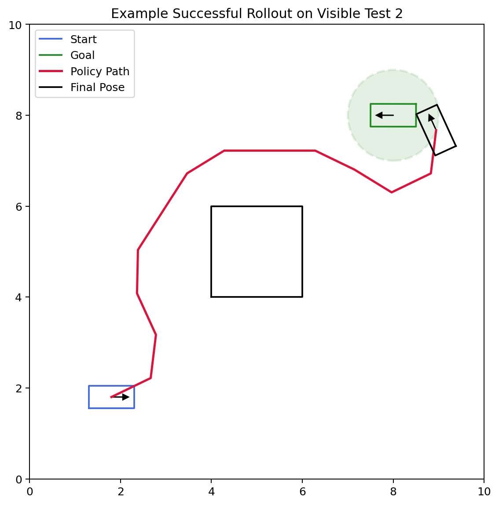

R (the red tile), and the destination at
G (the green tile).
In this MP you will implement:
As in the earlier MPs, a lot of code is already provided for you. Your job is to fill in the missing learning logic and, for the Dubins car part, design a useful hand-crafted feature representation.
Look inside the template/ directory for the starter
code. You will find:
Dependencies (namely gymnasium is the new one) to be
installed:
pip install -r requirements.txtFiles relevant to Part III:
tabular_q_learning.py - you will edit and submit
thisFiles relevant to Part IV:
linear_dqn.py - you will edit and submit thisgym_robot.py - you will edit and submit thiscspace.py - no need to copy from MP3, we provide it for
yourobot.py - no need to copy from MP3, we provide it for
youdata/ - here you will define JSON files for training
your Linear DQN agent, we provide a small test set to get you
startedPlease submit:
tabular_q_learning.pygym_robot.pylinear_dqn.pyQAgent_weights.npy - trained Q-table for the Taxi
environmentlinear_dqn_weights.npy - trained weight matrix for the
linear DQN agentIn this part you will implement tabular Q-learning for the Gymnasium Taxi-v3 environment.
You will find TODO(III) markers in
tabular_q_learning.py. The main tasks are:
You will be graded on:
QAgent.update(...)QAgent_weights.npyThat means you are free to tune hyperparameters such as
alpha, gamma, epsilon, and
init_val.
To run the code in this part you will need to directly modify the
main block in tabular_q_learning.py to call
your training and evaluation functions. We provide an example of how to
set up your experiments but you are free to (and should) modify it as
you see fit. You can also add additional helper functions and classes as
needed.
R (the red tile), and the destination at
G (the green tile).
We highly recommend that you read through the official Taxi environment documentation to understand the details of the environment. Here we provide a brief summary.
Taxi-v3 is a small gridworld in which a taxi must:
The environment is small enough that a simple tabular method works very well.
The image above can be rendered using env.render() after
you create the environment with render_mode="rgb_array".
For simpler debugging in terminal the environment also supports an ASCII
render that looks something like:
+---------+
|R: | : :G|
| : | : : |
| : : T : |
| | : | : |
|Y| : |B: |
+---------+Each Gym environment provides
env.observation_spaceenv.action_spaceFor Taxi-v3:
Discrete(500)
env.observation_space.n == 500Discrete(6)
env.action_space.n == 6The six actions are:
0: move south1: move north2: move east3: move west4: pick up passenger5: drop off passengerReward structure:
-1 for a normal step+20 for a successful drop-off-10 for illegal pickup/drop-off actionsEpisode end conditions:
terminated=True when the passenger is successfully
dropped offtruncated=True if the environment time limit is
reachedWhen training, stop an episode when:
done = terminated or truncatedbut when updating the Q-table, only use terminated to
determine whether to bootstrap or only use the current rewards.
The Taxi observation is a single integer state id. You do not need to decode it into a specific state of the world since for tabular Q-learning we can use it directly as the row index into your Q-table.
The basic loop is:
state, info = env.reset()
next_state, reward, terminated, truncated, info = env.step(action)The official Taxi docs mention action masking in info.
Feel free to play around with it, though it is not required for this
assignment.
tabular_q_learning.pyQAgent.__init__(...)Initialize self.q_table as a NumPy array with:
[n_states, n_actions]floatinit_valQAgent.act(state, epsilon=0.0)Implement epsilon-greedy action selection:
epsilon, choose a random actionnp.argmax behavior)QAgent.update(...)Implement the standard Q-learning update:
target = reward if terminal
target = reward + gamma * max_a' Q(s', a') otherwise
Q(s, a) <- Q(s, a) + alpha * (target - Q(s, a))This is the part of Part III that is graded directly for correctness.
train_agent(...)Implement the training loop over episodes:
env.step(action)terminated or truncatedeval_agent(...)We recommend writing a separate greedy evaluation helper with
epsilon=0.0 since this is how we evaluate your final
policy…
Submit your best trained Q-table as a NumPy file named
QAgent_weights.npy (the code currently saves to this by
default).
In this part you will implement a linear function approximator for DQN in a Dubins car environment. Training can be slow because we are training an agent for many timesteps across many environments, in which each step requires collision checking. DO NOT wait until the last minute to start this part.
In MP4 you wrote linear models of the form: \[y = X A\]
Here you will again use a linear model, but now each action has its own weight vector: \[ Q(s, a) = \phi(s)^T w_a \]
where:
Your job is to:
gym_robot.pylinear_dqn.pytrain_env_*.json training
environmentslinear_dqn_weights.npy

|
 |
| The 5 visible Dubins-car test environments provided for you. Notice that the actual heading of the goal is visualized but not relevant to the task. All that matters is the position of the goal and radius around it. | An example successful rollout on one of the provided visible test environments. The green disk shows the goal-tolerance region. Notice that the environment actions are stochastic and therefore even with the same policy we may get a different outcome. |
The underlying robot is a Dubins-style car with a fixed set of three controls and stochastic transitions (noise added to these controls):
Each episode:
start pose in the JSON filegoal_tolerance of the goal position (not
configuration, meaning the final heading does not matter)30 steps if the goal has not been
reachedWhen writing your training loop end an episode when
done = terminated or truncated just like in the Taxi
environment. And again, when computing the DQN target, only use
terminated to decide whether to bootstrap from the next
state.
gym_robot.pyThe environment already handles:
Your main responsibility in this file is the observation function:
make_observation(...)make_observation(...)The GymDubinsCar class uses the very first observation
returned by reset() to define
observation_space, so consistency matters. If your first
observation has a different shape from later observations, your training
and evaluation code will break.
Because the Q-function is linear, feature engineering matters a lot more here than it would in a deep-network implementation. Feel free to come up with any features you think might be useful, including interaction terms between simple features and nonlinear transformations of the raw information, or any other information you want to extract from the robot state and the environment
linear_dqn.pyImplement the linear DQN logic, including:
Some useful type/shape expectations:
self.weights should be a 2D NumPy array of shape
[num_features, num_actions]act(...) should return an integer action index in
[0, num_actions - 1]The core update is still the usual DQN target:
target = reward if terminated
target = reward + gamma * max_a' Q_target(s', a') otherwisebut now we will update the weights of our model using a step of gradient descent on the squared TD error. In other words, think of the target as the label and the current Q value as the prediction therefore the squared loss is:
td_error = (target - Q(s, a)) ** 2which we can use to update the weights w_a for action
a…
You are expected to create your own training environments.
Create files named:
data/train_env_1.json
data/train_env_2.json
...The easiest workflow is:
start, goal, and obstacle
layoutNone of our hidden tests are extremely challenging but they do require a reasonable amount of training and a good feature design to pass. We recommend starting with simple environments and then gradually increasing the difficulty as you iterate on your design.

|

|
| An example lidar visualization showing the current robot pose, lidar rays, hit points, and the goal-tolerance region. | Example training return curve from a run in which the initial epsilon was decayed to 0.2 after 500 iterations and then held constant for the remaining iterations. |
We provide 5 visible test environments in
data/test_env_1.json through
data/test_env_5.json.
The autograder uses:
for a total of 15 test environments.
To get full credit on the linear DQN portion, your submitted policy must pass at least 10 of the 15 test environments.
We strongly recommend that you do not train directly on the 5 visible test environments at first. Instead, treat them like a validation set while you iterate on:
Naturally once you’ve settled on a final design you should train on the visible test environments as well before submitting…
Each environment JSON contains:
start: initial robot configuration
[x, y, theta]goal: goal configuration
[x, y, theta]obstacles: workspace polygonsThe goal check only uses the goal position and
goal_tolerance, but the full goal pose is
still stored in the JSON for visualization and consistency. You should
not modify the robot parameters when making new training environments,
only modify the start, goal, and
obstacles fields.
When you finish the assignment, if you want to play with a more
difficult task you can add the goal heading into the reward structure in
gym_robot.py and then use the full goal pose in your
feature design as well.
A good linear feature vector usually includes some combination of:
There is no single required feature set. Part of the assignment is figuring out a reasonable one.
The code runs each experiment in a new directory under
results/run_<experiment_number>. It will save the
weights as linear_dqn_weights.npy in that directory along
with other details such as evaluation on your test environments.
Submit:
tabular_q_learning.pygym_robot.pylinear_dqn.pyQAgent_weights.npylinear_dqn_weights.npyDo not forget to access Gradescope from the Launch App button in Coursera so that your grade is automatically sync’d.
You are expected to be familiar with the general course policies, including academic integrity. This is an individual assignment and the code you submit must be your own work.